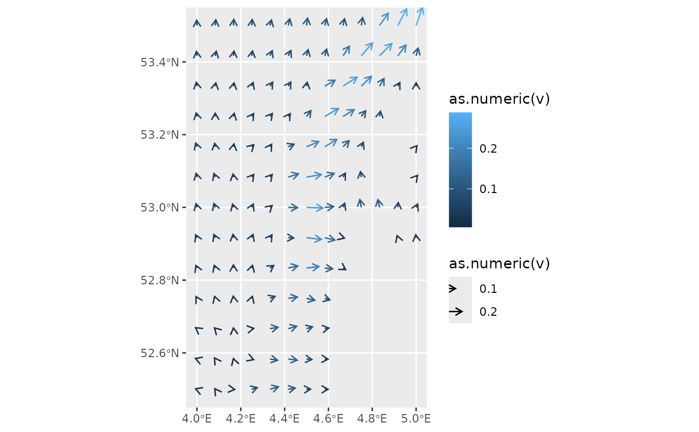

Calculate correction for angle in the plot coordinate system
Source:R/angle_correction.r
angle_correction.RdThe angle of a vector may be distorted when your plot uses a different
coordinate system than the one for which the angle is specified. If data
is a simple feature object (sf), the angle will be corrected
for the displayed coordinate reference system (crs). When
the crs is missing, an aspect ratio of 1 is assumed. For any other data,
the angle is corrected for the aspect ratio in the plot.
Arguments
- data
fortified data used in a
geom_fields(). Should at least containnumericcolumnsx,yandangle.- panel_params
panel parameters as returned by GeomFields$setup_params()
- coord
A coord object.
Value
A data.frame with an additional angle_correction column. The corrected angle is given
by angle_correction + angle.
Details
This function is used by default by geom_fields(). For more details on
why this correction is required and how to customize corrections please see
vignette("angle_correction").
Examples
if (requireNamespace("ggplot2") && requireNamespace("stars")) {
library(ggplot2)
library(stars)
ggplot() +
geom_fields(
data = seawatervelocity,
mapping = aes(radius = as.numeric(v),
angle = as.numeric(angle),
col = as.numeric(v)),
## You can provide the `angle_correction()` as argument explicitly
## (it is already the default). Note that the plotted region requires
## hardly any correction for the angles.
.angle_correction = angle_correction)
}
#> Loading required package: abind
#> Loading required package: sf
#> Linking to GEOS 3.12.1, GDAL 3.8.4, PROJ 9.4.0; sf_use_s2() is TRUE
#> Angle correction between 0.00 and 0.00 radials
